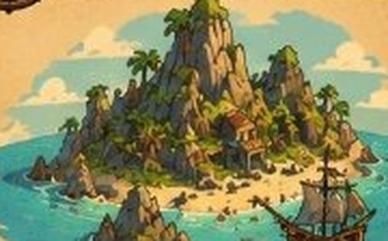
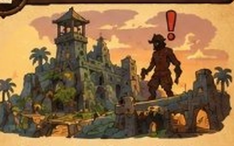
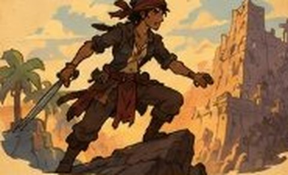
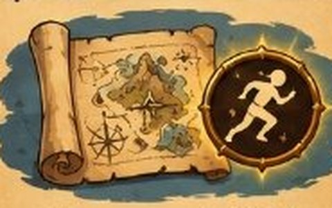
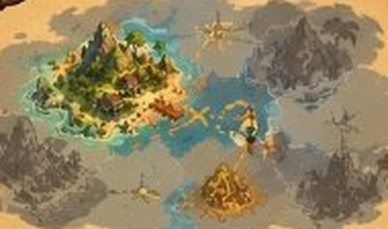
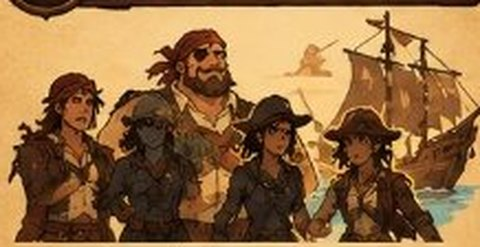
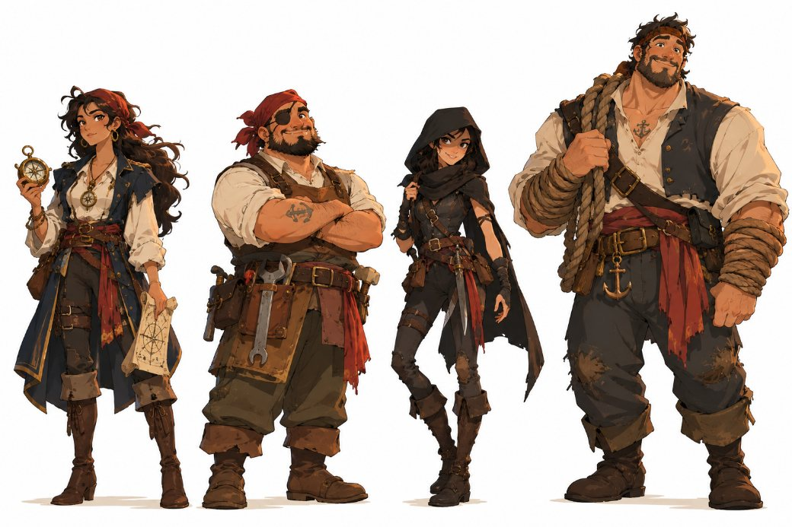
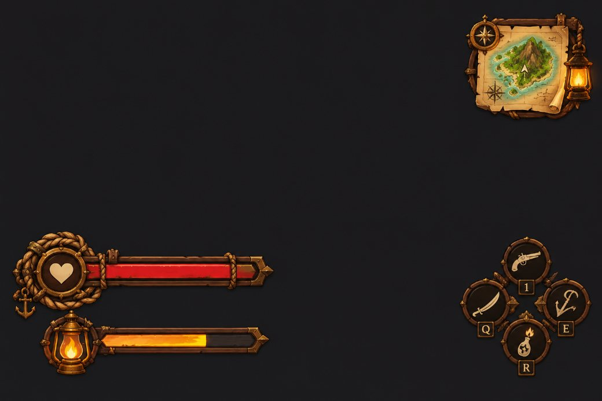

Protagonista
ProtagonistaKai
14 años, grumete huérfano, curioso y terco. Quiere saber qué pasó con su padre.
- 🧗 4 destrezas
- ⚡ Impulsivo
Premisa, género, objetivo del jugador y Core Loop.
Kai vive en Caleta Gris, una aldea pesquera pobre, tras la desaparición de su padre, el capitán Elias Tancredo. Lo único que dejó fue un mapa cuya Tinta de Marea solo muestra la propia caleta y responde a hazañas reales, no a simple exploración.
Cada isla es un nivel con retos de destreza pirata: trepar, pelear, robar, navegar y esconderse. Superarlos otorga habilidades permanentes y fragmentos de mapa que abren la ruta a la siguiente isla.
La Armada de la Corona, liderada por la Almirante Renata Voss, persigue a cualquier pirata sin licencia; en algunas islas Kai deberá ser muy sigiloso para no ser descubierto.

Aventura y Metroidvania en 3D estilizado. Progresión por habilidades y rutas que se abren al ganar nuevas capacidades.
Completar el mapa navegando isla por isla, mejorando las destrezas de Kai y su tripulación hasta reunir las pistas del Corazón de las Mareas.
13+ · principiantes e intermedios. Tono ligero y caricaturesco, aventura pirata sin violencia gráfica.
Cada isla resuelve un problema concreto (cruzar sin ser visto, vencer a un guardián, reparar una parte del barco) y esa solución se convierte en la llave para la siguiente.






↻ y el ciclo vuelve a empezar en la nueva isla

Trepar, saltar y cruzar acantilados.
Atacar y bloquear con espada.
Esconderse, silbar, abrir cerraduras.
Timonear el barco entre islas.
Permiten el enfrentamiento abierto. Premian la acción directa.
Prohíben el combate directo: hay que leer patrullas, luz y sonido. De noche los Cazadores patrullan con campo de visión reducido.
Falla blanda: ser detectado no mata a Kai; lo expulsa de la zona y reinicia la ronda de patrulla. No hay game over permanente.
Protagonista14 años, grumete huérfano, curioso y terco. Quiere saber qué pasó con su padre.
Líder de la Armada de la Corona. Disciplinada… y predecible.
 Navegante
NaveganteEx-pescadora que conoce corrientes y atajos.
 Carpintero
CarpinteroRepara y mejora el barco. Sin él no hay islas lejanas.
 Ladrona
LadronaSigilo avanzado y ganzúas. Esencial en las islas de la Corona.
 Forzudo
ForzudoRompe bloqueos pesados y ayuda en combates grupales.


2.5D / 3D estilizado con proporciones caricaturescas, contornos marcados y animaciones elásticas. Referencias: The Wind Waker, Sea of Thieves, Assassin’s Creed Black Flag y Monkey Island.

Kai despierta y encuentra el mapa en blanco. Barbagrís le propone tres pruebas —agilidad, combate y sigilo— que puede completar en el orden que quiera. Al terminarlas, el mapa se actualiza solo y revela la Isla del Faro Roto.




Mockups de interfaz: HUD de exploración y pantalla del mapa vivo.